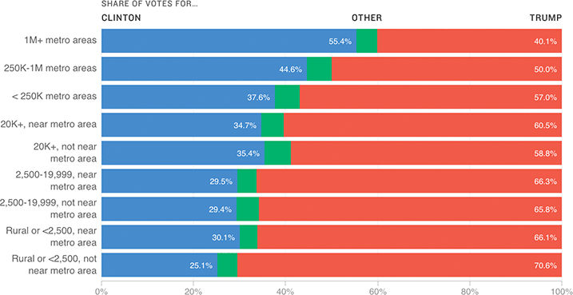

How The 2016 Vote Went, By Population Area
The USDA breaks down counties into varying levels of urban- or rural-ness, using what are called “rural-urban continuum codes.” When separated out into these buckets, it’s striking how steady the shift from Democratic to Republican is as areas get increasingly rural.
